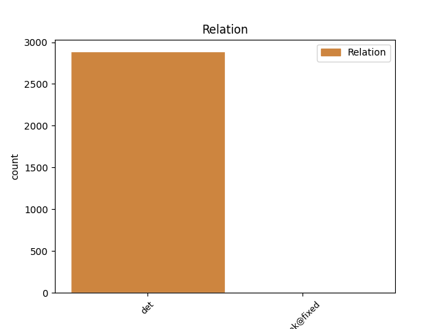
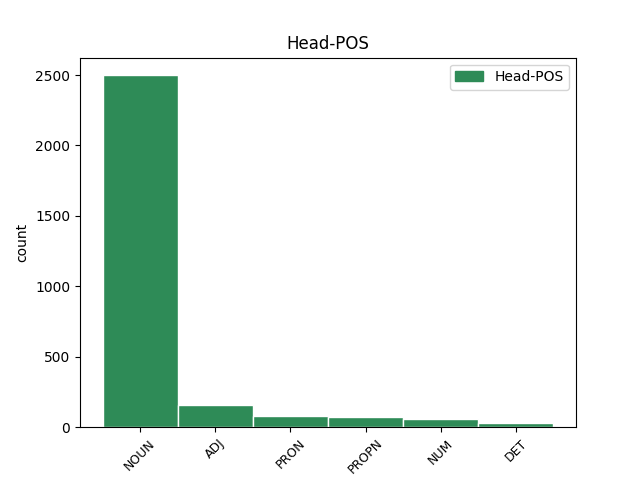
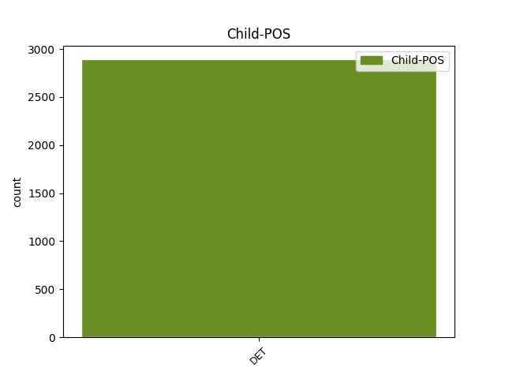

Distribution of features within this leaf



Agreement Rules sorted by frequency.
- When the dependent token is the determiner(det) of the head token, and the head token is NOUN and the dependent token is DET.
1 Tuliko _ _ _ _ 0 _ _ _
2 mitään mikään DET Pron,Qnt,Par Case=Par|PronType=Ind 3 det _ _
3 kalaa kala NOUN N,Sg,Par Case=Par|Number=Sing 0 _ _ _
4 ? _ _ _ _ 0 _ _ _
1 Tää _ _ _ _ 0 _ _ _
2 on _ _ _ _ 0 _ _ _
3 jotain jokin DET Pron,Qnt,Sg,Par Case=Par|Number=Sing|PronType=Ind 5 det _ _
4 niin _ _ _ _ 0 _ _ _
5 mahtavaa mahtava ADJ A,Sg,Par Case=Par|Number=Sing 0 _ _ _
6 ! _ _ _ _ 0 _ _ _
1 Mitä mikä DET Pron,Interr,Par Case=Par|PronType=Int 2 det _ _
2 muuta muu PRON Pron,Qnt,Sg,Par Case=Par|Number=Sing|PronType=Ind 0 _ _ _
3 te _ _ _ _ 0 _ _ _
4 luulette _ _ _ _ 0 _ _ _
5 ? _ _ _ _ 0 _ _ _
1 Mull _ _ _ _ 0 _ _ _
2 on _ _ _ _ 0 _ _ _
3 sen se DET Pron,Dem,Sg,Gen Case=Gen|Number=Sing|PronType=Dem 4 det _ _
4 Sundkvistin sundkvist PROPN N,Prop,Sg,Gen Case=Gen|Number=Sing 0 _ _ _
5 , _ _ _ _ 0 _ _ _
6 numero _ _ _ _ 0 _ _ _
7 kyllä _ _ _ _ 0 _ _ _
8 mut _ _ _ _ 0 _ _ _
9 mä _ _ _ _ 0 _ _ _
10 aatteli _ _ _ _ 0 _ _ _
11 et _ _ _ _ 0 _ _ _
12 mä _ _ _ _ 0 _ _ _
13 nyt _ _ _ _ 0 _ _ _
14 tiedottelen _ _ _ _ 0 _ _ _
15 sulle _ _ _ _ 0 _ _ _
16 ett _ _ _ _ 0 _ _ _
17 ei _ _ _ _ 0 _ _ _
18 ainakaan _ _ _ _ 0 _ _ _
19 tartte _ _ _ _ 0 _ _ _
20 odotella _ _ _ _ 0 _ _ _
21 mua _ _ _ _ 0 _ _ _
22 sinne _ _ _ _ 0 _ _ _
23 . _ _ _ _ 0 _ _ _
1 On _ _ _ _ 0 _ _ _
2 ilmeistä _ _ _ _ 0 _ _ _
3 että _ _ _ _ 0 _ _ _
4 Suomessakin _ _ _ _ 0 _ _ _
5 yhteiskunta _ _ _ _ 0 _ _ _
6 tukee _ _ _ _ 0 _ _ _
7 autoilua _ _ _ _ 0 _ _ _
8 vuosittain _ _ _ _ 0 _ _ _
9 useilla usea DET Pron,Qnt,Pl,Ade Case=Ade|Number=Plur|PronType=Ind 10 det _ _
10 miljardeilla miljardi NUM Num,Card,Pl,Ade Case=Ade|Number=Plur|NumType=Card 0 _ _ _
11 . _ _ _ _ 0 _ _ _
1 Profiilimme _ _ _ _ 0 _ _ _
2 esiintyisi _ _ _ _ 0 _ _ _
3 tv:ssä _ _ _ _ 0 _ _ _
4 vielä _ _ _ _ 0 _ _ _
5 monta moni DET Pron,Qnt,Sg,Par Case=Par|Number=Sing|PronType=Ind 7 det _ _
6 , _ _ _ _ 0 _ _ _
7 monta moni DET Pron,Qnt,Sg,Par Case=Par|Number=Sing|PronType=Ind 0 _ _ _
8 kertaa _ _ _ _ 0 _ _ _
9 , _ _ _ _ 0 _ _ _
10 mutta _ _ _ _ 0 _ _ _
11 aivan _ _ _ _ 0 _ _ _
12 toisenlaisissa _ _ _ _ 0 _ _ _
13 merkeissä _ _ _ _ 0 _ _ _
14 . _ _ _ _ 0 _ _ _
1 Ammatissani _ _ _ _ 0 _ _ _
2 joudun _ _ _ _ 0 _ _ _
3 paikallissijojen _ _ _ _ 0 _ _ _
4 nimitysten _ _ _ _ 0 _ _ _
5 kanssa _ _ _ _ 0 _ _ _
6 tekemisiin _ _ _ _ 0 _ _ _
7 harva harva PRON Pron,Qnt,Sg,Nom Case=Nom|Number=Sing|PronType=Ind 0 _ _ _
8 se se DET Pron,Dem,Sg,Nom Case=Nom|Number=Sing|PronType=Dem 7 unk@fixed _ _
9 päivä _ _ _ _ 0 _ _ _
10 . _ _ _ _ 0 _ _ _
Disagree Examples:
1 Voinko _ _ _ _ 0 _ _ _
2 luottaa _ _ _ _ 0 _ _ _
3 sinun sinä DET Pron,Pers,Sg2,Gen Case=Gen|Number=Sing|Person=2|PronType=Prs 4 det _ _
4 tukeesi tuki NOUN N,Sg,Ill,PxSg2 Case=Ill|Number=Sing|Number[psor]=Sing|Person[psor]=2 0 _ _ _
5 ? _ _ _ _ 0 _ _ _
1 se _ _ _ _ 0 _ _ _
2 ol´ _ _ _ _ 0 _ _ _
3 minu minä DET Pron,Pers,Sg1,Gen Case=Gen|Number=Sing|Person=1|PronType=Prs|Style=Coll 4 det _ _
4 ikäseim ikäinen ADJ A,Sg,Nom,PxSg1 Case=Nom|Number=Sing|Number[psor]=Sing|Person[psor]=1|Style=Coll 0 _ _ _
5 mies _ _ _ _ 0 _ _ _
1 Se _ _ _ _ 0 _ _ _
2 oli _ _ _ _ 0 _ _ _
3 minun minä DET Pron,Pers,Sg1,Gen Case=Gen|Number=Sing|Person=1|PronType=Prs 4 det _ _
4 ratkaisuni ratkaisu NOUN N,Sg,Nom,PxSg1 Case=Nom|Number=Sing|Number[psor]=Sing|Person[psor]=1 0 _ _ _
5 . _ _ _ _ 0 _ _ _
1 Tuoko _ _ _ _ 0 _ _ _
2 on _ _ _ _ 0 _ _ _
3 teidän te DET Pron,Pers,Pl2,Gen Case=Gen|Number=Plur|Person=2|PronType=Prs 5 det _ _
4 uusi _ _ _ _ 0 _ _ _
5 autonne auto NOUN N,Sg,Nom,PxPl2 Case=Nom|Number=Sing|Number[psor]=Plur|Person[psor]=2 0 _ _ _
6 ? _ _ _ _ 0 _ _ _
1 minun minä DET Pron,Pers,Sg1,Gen Case=Gen|Number=Sing|Person=1|PronType=Prs 2 det _ _
2 mittaiseni mittainen ADJ A,Sg,Nom,PxSg1 Case=Nom|Number=Sing|Number[psor]=Sing|Person[psor]=1 0 _ _ _